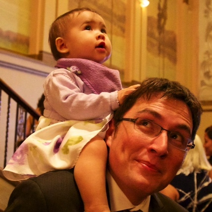
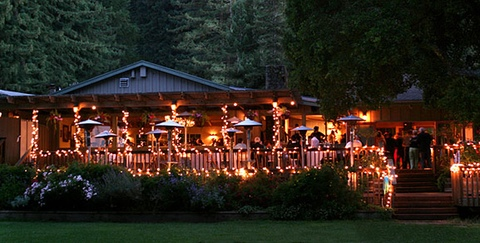

Hi there! As our wedding approaches we are optimizing our website to ensure you can easily find answers to your questions. If you can't find the answer to your question on this website, don't hesitate to email us.
Don't forget to book your rooms at the Hilton by September 29 for the group rate!
Wedding Party
Mark + Nathalie
Officiating
- Jane Manning Hyatt
Standing for the bride
- Rose McConnachie (maid of honour)
- Dorothy Becks
- Vincent Intersimone
- Sarah Gill
Standing for the groom
- Mike Johnstone (best man)
- Ryan Keddy
- Lynn Wu
- Anthony Arch IV
Flower Girl
- Zoë Schmidt

Parents of the bride
- Mary Garrison
- Anthony Arch III
Parents of the groom
- Angela Davidson
- David Christian
Venue

The Mountain Terrace is an indoor/outdoor venue located in the hills of Woodside, California. It features a rustic lodge overlooking a grassy lawn with a view of Silicon Valley that is framed by tall redwoods. The lawn will be the site for the ceremony, weather permitting. The reception, with dinner and dancing, will take place on the decks and in the lodge that is on the same property. You will not need transportation between the ceremony and the reception!
Directions
View Mark + Nathalie 10/12/13 in a larger map
From Halifax
Drive to Stanfield International Airport. Fly to San Francisco (approximately 6,138 km/3,814 miles). Follow directions for San Francisco, below.
From San Francisco
Take Highway 280 South, exit Highway 84 - Woodside Road. Go right on Woodside Road. Follow Woodside Road through the town to the top of the mountain (approximately 10 km/6.5 miles). When you reach the intersection of Woodside Road and Skyline Boulevard (Highway 35), go right on to Skyline Boulevard. Take the first right into the Mountain Terrace parking lot.
From San Jose
Take Highway 280 North, exit Highway 84 - Woodside Road. Go left on Woodside Road. Follow Woodside Road through the town to the top of the mountain (approximately 10 km/6.5 miles). When you reach the intersection of Woodside Road and Skyline Boulevard (Highway 35), go right on to Skyline Boulevard. Take the first right into the Mountain Terrace parking lot.
From Santa Cruz
Take Highway 17 North toward San Jose/Oakland. Take Highway 85 North toward Mountain View. Merge onto Highway 280 North toward San Francisco. Exit Highway 84 - Woodside Road. Go left on Woodside Road. Follow Woodside Road through the town to the top of the mountain (approximately 10 km/6.5 miles). When you reach the intersection of Woodside Road and Skyline Boulevard (Highway 35), go right on to Skyline Boulevard. Take the first right into the Mountain Terrace parking lot.
Ceremony + Reception
The ceremony and the reception will take place at the same venue, The Mountain Terrace at Woodside. It is an indoor/outdoor location with a grassy lawn, redwood deck, and rustic lodge. For directions to the venue, check out Venue + Directions.
The Ceremony
Mark and Nathalie's ceremony will take place on the lawn, weather permitting. You will want to wear shoes that are comfortable on grass. The area is unshaded so you will also want to wear sunscreen and dress in layers — regardless of the forecast.
The ceremony will be officiated by Jane Manning Hyatt, a family friend. It will be quite short. The rest is a surprise! (But, really, it's pretty traditional.)
The Reception
After the ceremony, there will be a short break for refreshments while family and friends, new and old, mingle and get to know each other. There will be lawn games.
The dinner will be sit-down and will feature vegetarian/vegan/gluten-free meal choices as well as your traditional chicken'n'fish.
Toasts, cake-cutting, and dancing in the lodge will follow the meal. Dance-offs are encouraged. You can also plan to change your shoes to boogie with the best of them. :)
To see who's walkin' and talkin' during the ceremony and reception, check out our Wedding Party page.
Accommodations
We have booked a block of rooms for Friday (October 11) and Saturday (October 12) at the Hilton Garden Inn of San Mateo. Our group rate for this hotel block is $105/night for a single king-sized bed and $125/night for two double-sized beds. You must book your room by September 29 to qualify for this amazing rate!
How to Reserve a Room
Reserve a room online or call 1-877-STAY-HGI and ask for the group rate for the Arch-Christian Wedding.Shuttle Service
We're setting up a shuttle to make your trip to the venue a bit easier. While we are still hammering out details, the plan is to have a shuttle pick up guests from the Hilton Garden Inn of San Mateo with a second pick-up at the Park'n'Ride at the Highway 92/Ralston Avenue junction, just off of I-280. You will be welcome to join the shuttle at either pick-up point regardless of where you are staying.
If you are planning on taking the shuttle, please fill out the shuttle registration form. We're not sure exactly what time the shuttle will leave each location, but we will keep you informed as we approach the date.
For directions by car to the venue, check out Venue + Directions.
Registry + Honeymoon
Want to contribute to our honeymoon? Check out our honeymoon registry.
For those of you looking for a more traditional registry, we're also set up at Amazon and Crate&Barrel.
FAQ
We are pretty uncomplicated people and we're aiming for an uncomplicated wedding. However, weddings are always a little complicated, no matter what you do. It is therefore with great attention to the curious and confused out there that we overburden you with facts, suggestions, and tips about our wedding to ensure that you feel welcome, comfortable, and unstressed.
How do I get to the venue?
Check out the Venue + Directions page for directions to the venue. Please note that the way up the hill to our venue is windy and it will likely take a bit longer to get there than you expect.
Is there a shuttle to take me there? How do I sign up?
Visit Shuttle Service.
What time should I arrive? What time will the reception conclude?
The ceremony begins at 4:30 PM. You will want to be seated by that point. We therefore recommend you arrive at 4:15 PM at the latest. We are punctual folks and are aiming to run our wedding to the minute of our timeline. The venue is booked until 10:30 PM. We know that you'll try to be respectful of our schedule because only awesome people got invited to our wedding.
Where should I park?
There is parking in front of the Mountain Terrace.
Is it true that the wedding is being held in close proximity to a biker bar?
Yes. You will undoubtedly see a bunch of motorcycle enthusiasts on your way to the venue. And you will almost certainly hear them revving their engines our ceremony. We think this adds rather than detracts from the ambience and we're expecting these things with cheer and good humo(u)r — and since Mark and Nathalie had their first date at that very biker bar, we actually think it's a nice touch.
Will I have to pay for parking?
Nope.
What should I wear?
The recommended dress code is “dressy cocktail.” Dinner jackets, ties, and bowties are encouraged. A tux would be a step too far in one direction; jeans would be a step too far in the other direction. Dresses and skirts don’t need to be floor-length.
It is ABSOLUTELY ESSENTIAL that you dress for the weather, and in layers! The ceremony is set to take place in an open area with no shade. October can be unpredictable in California, especially at a higher altitude. It could be hot and sunny; it could be cold and windy. Regardless of the forecast, please, please, please dress sensibly for a comfortable evening. There will be outdoor heat lamps for the dinner hour, but don't rely on those to keep warm.
What kind of shoes should/shouldn't I wear?
The venue features a big grassy lawn, which you will almost certainly have to walk on. Fancy, spiky heels and suede boots are not good friends with nature. You can dump your flats and throw on some stilettos for dinner and dancing if you're really keen.
Are there any colo(u)rs that guests should avoid wearing?
The wedding party will be dressed in purples and greys/grays, although that doesn’t mean you should avoid these colo(u)rs. Just be aware of this.
Are our kids invited?
Please let us know ahead of time if you plan on bringing your kids along with you so we can reserve a high-chair or booster seat. Alternatively, we can recommend some awesome babysitters.
Can I bring a date?
Due to space limitations and our desire to have an intimate wedding with people we actually know, we regret that we are having no +1s. If your partner's name is not on the invitation, they are not invited. If you think we made a mistake and we really meant to invite your partner and just forgot, don't be afraid to ask us.
Does your wedding have a theme?
Whimsicalifornia meets Canadapper!
I am coming from out of town. Where should I stay?
Please see the Accommodations page.
When is the RSVP deadline?
Your reply will need to have been received by October 1. If you suspect your RSVP card will not arrive in our mailbox in time, you must email us to ensure you have a seat at the dinner tables!
Are the ceremony and reception locations wheelchair accessible?
Yes, but you’ll have the best time if you let us know your needs in advance.
What should/could I do between the ceremony and the reception?
Weather permitting, there will be a time for refreshments on the lawn, as well as a variety of lawn games like croquet, bocce ball, and cornhole. Handstands and cartwheels are welcome!
Will food be served?
Yes, lots of it. Check the Dinner Menu page for more details.
Is it an open bar or a cash bar? Will I need any cash for the night?
Drinks are on us all night. Wine and champagne will also be served with dinner and during the toasts. Even though drinks are on us, feel free to tip the bartenders if you find the drinks particularly delightful.
What if I have a dietary restriction?
Vegans, vegetarians, and gluten-free folks will enjoy the sun-dried tomato tagine. Please inform Nathalie and Mark of any other dietary needs in advance to ensure we scout out the best and yummiest food for you. We are dedicated to ensuring your dietary needs are met, and then exceeded! :)
Will there be dancing?
Of course! There will be a DJ playing cheesy hits (by special request from the bride and groom) from the 80s, 90s, and so on.
Is there a gifts registry?
Yes; please see the Registry + Honeymoon page. A gift is not required to attend our wedding!
Will last names be changing after the wedding?
Yes. Nathalie will take Mark’s last name. Like a boss.
Does your wedding have a hashtag? What about a Facebook page or other way to share photos I take?
Our hashtag is #markalie. There isn't a page or app for you to install to aggregate photos from our wedding. If you need to document the event, feel free to post photos all over and share them on Facebook, or email them to us. But otherwise, take a break from your phone and enjoy the occasion! We have an awesome photographer to capture those special moments and would love to remember your bright and shiny faces instead of your bright and shiny phones when we look back on the day.
Who are your vendors?
Our beautiful save-the-dates and invitations were made by Elizabeth Weil and Vanessa Lai of Paperwheel. Jillian West of Little Bat will be handling our photography. A beautiful cake is being created by Kathy Lutz of Kathy's Kakes in San Mateo. Floral arrangements and bouquets are being designed by Laurie of Seasonal Celebrations in Belmont. Additional wedding wrangling is being handled by Jessica Goldblatt of Dreams on a Dime.
Our ceremony will feature music performed by the delightful Bluegrass Duets (give them a listen!). Later in the evening, our dancing will be DJ'd by Denon & Doyle.
I have a question not answered here; how do I contact you?
You can email Mark (m@rkchristian.ca) or Nathalie (nathalie.arch@gmail.com).